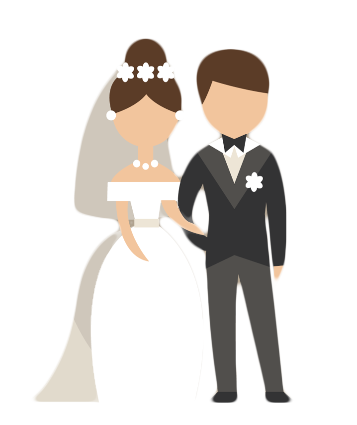

MI PROYECTO DE VIDA
Por: Oliver Eduardo López Pérez
A corto plazo

Para dentro de un año me visualizo trabajando como desarrollador de software formal en una empresa de manera remota, aún viviendo con mis padres y teniendo en mi posesión una mejor computadora
A medio plazo
Para dentro de dos años me visualizo viviendo en México con mi cónyugue gracias al ahorro que realicé desde que empecé mi etapa laboral hasta ese momento, también me veo trabajando en proyectos de desarrollo de software grandes a parte de mi laburo principal remunerado y empezando a estudiar artes visuales en la UANL.
A largo plazo

Dentro de cinco años me visualizo involucrado en un matrimonio, con casa propia y egresado de la universidad con maestría en artes visuales, también dispongo de una mejor computadora modernizada.